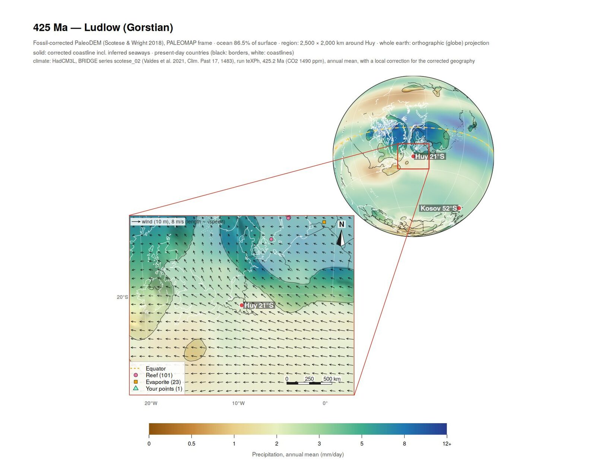

A point-and-click editor for fossil-corrected paleogeographic maps, built on R.
Global paleogeographic reconstructions such as the PALEOMAP PaleoDEMs (Scotese & Wright 2018) do not always agree with the rocks and fossils of a particular area: marine fossils on land, terrestrial deposits in the sea, inland seas cut off from the ocean. PaleoMapR shows the map of any age from 0 to 540 Ma with the fossil collections of the Paleobiology Database and the rock units of Macrostrat on it, lets you add your own points and switch off wrong records, and rebuilds a fossil-corrected elevation grid in which marine records lie in the sea and land records on land. It then draws publication maps of the result as PNG and vector PDF, optionally coloured by climate from the HadCM3L simulations of Valdes et al. (2021).
It runs in your web browser, but on your own computer. Your points and edits are plain CSV files.
Status: alpha. PaleoMapR works and is being used for Silurian maps, but buttons, defaults and file names may still change. Please report anything that breaks, looks wrong or is confusing.

What it does
| Tab | What you do there |
|---|---|
| Map editor | Look at the map of any PaleoDEM age (0–540 Ma, every 5 Myr, 0.2° grid) in one of four plate models, with PBDB collections and Macrostrat units; inspect records; add marine, deeper-shelf, evaporite, terrestrial, reef or glacial points; exclude wrong records; rebuild the corrected grid (about a minute per age) |
| Figure | Maps of the corrected or original grid: Mollweide, Robinson, Equal Earth, Winkel tripel, orthographic globe, polar and other projections; whole map, zoomed-in area or composite; localities with palaeo-latitudes, symbols, scale bar, north arrow; climate layers (precipitation, temperature, P − E, runoff, river input, salinity, up-/downwelling, mixed layer, surface O2, density, sea ice) with wind and current arrows |
| About | Version, update check, and the works to cite |
How the correction works. Land and sea first follow the PBDB-adjusted PaleoCoastlines (Kocsis & Scotese 2021). Around every marine or evaporite record still on land the map is flooded; terrestrial records keep a patch of land; inland seas that hold marine records are joined to the ocean by the shortest low-lying route. Coastlines, slopes and the shelf are then smoothed. Where no record asks for a change, the PaleoDEM elevations are kept. Each rebuild reports the marine records still on land and the seas still cut off (both should be 0).
Installation
PaleoMapR needs about 2 GB of disk space and, once, an internet connection: the setup downloads the open data sets (about 1 GB) and a small Python with pyGPlates for the plate rotations. No Python or conda installation is needed beforehand.
Windows, no R experience needed
- Install R from https://cran.r-project.org/bin/windows/base/ (the default options are fine).
- Download PaleoMapR-launcher.zip and unzip it somewhere permanent with a short path, for example into
Documents\Apps(not in Downloads). This gives a folderPaleoMapR, which is also your working folder: the data, your points and your maps go there. - In that folder, double-click SETUP.bat. It installs PaleoMapR and the R packages it needs, puts a PaleoMapR icon on your desktop, and prepares the data and the corrected grids of the Silurian ages (20–60 minutes the first time). If a download fails, run SETUP.bat again: finished parts are kept.
- Double-click the icon. PaleoMapR opens in your browser.
PaleoMapR checks once a day whether a newer version is on GitHub and offers Update and restart.
From R (Windows, macOS, Linux)
install.packages("remotes")
remotes::install_github("stratigraphy/PaleoMapR")
PaleoMapR::pm_setup("~/PaleoMapR") # once: Python, data, climate files, corrected grids (20-60 min)
PaleoMapR::run_app("~/PaleoMapR") # every timepm_setup(ages = "all") prepares all 109 ages (several hours), pm_setup(ages = c(300, 305, 310)) your own. Any other age also works in the editor: choose it and press Rebuild this age. On Linux, sf and terra need the GDAL, GEOS, PROJ and udunits system libraries.
The steps behind the editor can be run from a script too:
pm <- PaleoMapR::pm_load("~/PaleoMapR")
pm$run_dem_correction(425) # corrected grid for 425 Ma
pm$make_maps(425, layer = "precipitation", wind = TRUE) # PNG and PDF in maps/Getting started
The user guide walks through the editor: looking around, inspecting records, adding points, rebuilding a grid and making a composite figure of your study area. Where the data come from lists the data sets, the HadCM3L runs and what to cite.
Feedback and help
- Something broken or wrong? Open a bug report.
- Missing a data set, layer or option? Suggest a feature.
- Questions, or want to show a map? Use the Discussions.
Contributions are welcome; see CONTRIBUTING.md.
Citation
If you use maps made with PaleoMapR, please cite it (citation("PaleoMapR")) and the data behind the maps:
- PaleoDEMs and PALEOMAP plate model: Scotese, C. R. and Wright, N. (2018). PALEOMAP Paleodigital Elevation Models (PaleoDEMS) for the Phanerozoic. PALEOMAP Project. https://www.earthbyte.org/paleodem-resource-scotese-and-wright-2018/
- PaleoCoastlines: Kocsis, Á. T. and Scotese, C. R. (2021). Mapping paleocoastlines and continental flooding during the Phanerozoic. Earth-Science Reviews 213, 103463. https://doi.org/10.1016/j.earscirev.2020.103463
- Fossil records: The Paleobiology Database, https://paleobiodb.org
- Rock units: Peters, S. E., Husson, J. M. and Czaplewski, J. (2018). Macrostrat: a platform for geological data integration and deep-time Earth crust research. Geochemistry, Geophysics, Geosystems 19, 1393–1409. https://doi.org/10.1029/2018GC007467
- Climate layers: Valdes, P. J., Scotese, C. R. and Lunt, D. J. (2021). Deep ocean temperatures through time. Climate of the Past 17, 1483–1506. https://doi.org/10.5194/cp-17-1483-2021
- Plate rotations: Müller, R. D. et al. (2018). GPlates: building a virtual Earth through deep time. Geochemistry, Geophysics, Geosystems 19, 2243–2261. https://doi.org/10.1029/2018GC007584
The full list (climate model, CO2, sea level, other plate models, Natural Earth) is in Where the data come from and in the About tab of the editor. The local correction of the climate to your map is PaleoMapR’s own statistical adjustment, not HadCM3L output; say which climate option you used in your figure captions.
Licence
The code is GPL (>= 2); see LICENSE.md. The data sets are not part of the package: they are downloaded from their sources by the setup and keep their own licences and citation requests.